释放大语言模型推理效率：Speculative Decoding 全面综述
Heming Xia1、Zhe Yang2、Qingxiu Dong2、Peiyi Wang2、Yongqi Li1、Tao Ge3、Tianyu Liu4、Wenjie Li1、Zhifang Sui2
1香港理工大学计算学系；2北京大学多媒体信息处理全国重点实验室；3微软亚洲研究院；4阿里巴巴集团
{he-ming.xia}@connect.polyu.hk；{yz_young}@pku.edu.cn
摘要
为缓解大语言模型（LLM）自回归 decoding 带来的高推理延迟，Speculative Decoding 作为一种新的 LLM 推理 decoding 范式出现。在每个 decoding 步骤，它先高效草拟多个未来 token，再并行验证。不同于自回归 decoding，Speculative Decoding 允许每步同时 decoding 多个 token，从而加速推理。本文全面综述并分析这一有前景的范式。我们首先给出其形式化定义与表述，再深入讨论草稿器选择、验证策略等关键方面。此外，我们在第三方测试环境下比较分析领先方法。希望本文推动 Speculative Decoding 的进一步研究，最终促进更高效的 LLM 推理1。
1 引言
大语言模型（LLM）在一系列下游任务中取得了卓越能力（OpenAI, 2023; Touvron et al., 2023a,b; Chiang et al., 2023; Jiang et al., 2023）。它们正逐渐成为 ChatGPT2 等综合 API 界面的基石，通过实时人机交互为人类生活提供服务与指导。然而，这些大型模型的推理延迟已成为限制广泛应用的重要障碍。延迟主要源于自回归 decoding 所需的逐 token 生成，使推理延迟随生成序列长度和模型规模增加而上升。
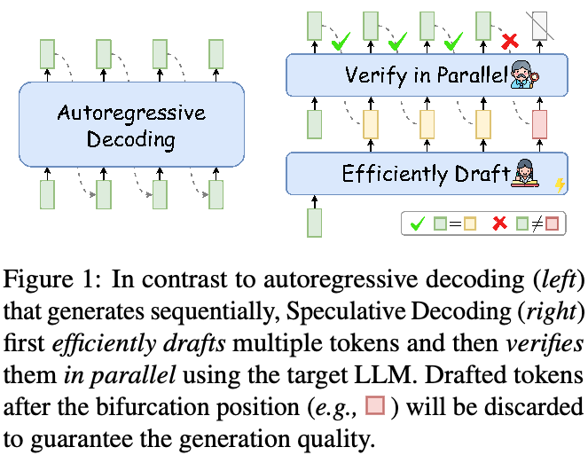
为加速 LLM 推理，研究者提出创新推理范式 Speculative Decoding（Stern et al., 2018; Xia et al., 2023; Leviathan et al., 2023; Chen et al., 2023a）。如图 1，每个 decoding 步骤先高效草拟多个 token，作为对目标 LLM 未来 decoding 步骤的推测，再用 LLM 并行验证全部草稿 token。仅满足 LLM 验证准则的 token 被接受为最终输出，以保证生成质量。
Speculative Decoding 基于两项关于 LLM 推理的关键观察：（1）许多简单 token 可以用较少计算开销预测，例如使用小模型；（2）LLM 推理高度受内存带宽限制（Patterson, 2004; Shazeer, 2019），主要延迟瓶颈来自 LLM 参数的内存读写，而非算术运算。据此，Speculative Decoding 借鉴推测执行3概念，使 LLM 专注验证预先草拟的 token（接下页）。
1相关论文将定期更新于 https://github.com/hemingkx/SpeculativeDecodingPapers。
3推测执行（Burton, 1985; Hennessy and Patterson, 2012）是计算机体系结构中的一种优化技术：预先执行任务，随后验证其是否需要，从而避免顺序执行固有的延迟。
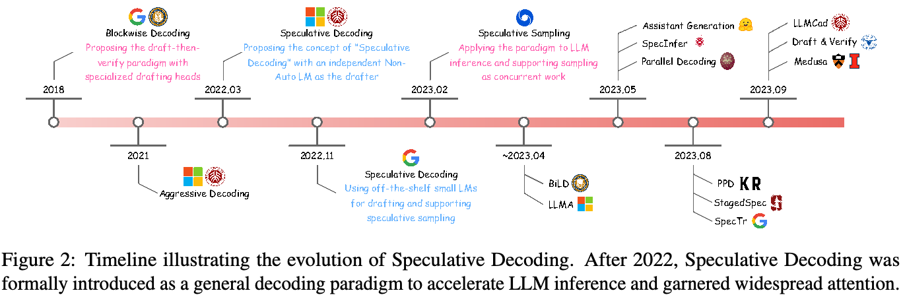
（接上页）大幅减少频繁操作 LLM 参数内存的需要，从而改善推理效率。
尽管 Speculative Decoding 展现出潜力，仍有几个关键问题值得进一步研究。例如，如何设计最优草稿器，平衡推测准确率与草稿生成效率（Xia et al., 2023; Zhou et al., 2023; Li et al., 2024）。此外，必须评估验证准则能否同时保持生成并行性和输出质量（Miao et al., 2024; Cai et al., 2024）。现有方法的测试条件各异，因此还需要统一基准，帮助研究社区形成现实的加速预期。
在这一领域快速扩展之际，本文首次尝试综述该领域，旨在让学术界了解最新进展。我们系统分类当前研究并深入分析相关工作。此外，我们引入 Spec-Bench，一个在不同应用场景评估 Speculative Decoding 的综合基准。贡献如下：
- 首次综述：据我们所知，我们首次全面综述 Speculative Decoding。
- 形式化定义：我们提供形式化定义和表述，为未来研究奠定基础。
- 新分类法：我们提供系统分类法，有序组织现有工作。
- Spec-Bench：我们引入面向 Speculative Decoding 的广泛评估基准，支持比较领先方法。
希望本工作为初学者提供重要指南，并激励未来研究。
2 概览
本文全面综述 Speculative Decoding。首先介绍早期研究（§3），以演进时间线说明（图 2）；随后给出形式化定义与表述（§4）；再详细讨论领先技术，包括草稿模型选择（§5）、验证策略（§6）以及草稿器与目标 LLM 的对齐（§7）。此外，我们引入广泛评估基准 Spec-Bench，以评估其加速效果（§8）。
3 Speculative Decoding 的演进
本节先讨论动机（§3.1），再详细介绍该领域早期尝试（§3.2）。
3.1 动机
LLM 的广泛采用使自回归 decoding 成为 LLM 推理的事实标准（Chowdhery et al., 2023; OpenAI, 2023; Jiang et al., 2024）。然而，自回归 decoding 受推理延迟限制，而这主要源于 LLM 的内存受限计算（Patterson, 2004; Shazeer, 2019）。具体而言，每个 decoding 步骤的主要瓶颈不是计算操作，而是必须将全部 LLM 参数从高带宽内存（HBM）传到 GPU 等现代加速器的片上缓存。这个每步只生成一个 token 的过程导致加速器利用不足、效率低下。
算法 1 自回归 decoding
需要：语言模型 \(M_q\)、输入序列 \(x_1,\ldots,x_t\) 和目标序列长度 \(T\)。
- 初始化 \(n\leftarrow t\)。
- 当 \(n<T\) 时，令 \(q_{n+1}\leftarrow M_q(x\mid x_{<n+1})\)，采样 \(x_{n+1}\sim q_{n+1}\)，然后令 \(n\leftarrow n+1\)。
- 结束循环。
3.2 “先草拟、后验证”的开创性探索
为缓解上述问题，一种直观方式是利用空闲计算资源，提高 LLM 推理并行性。Stern et al.（2018）为此提出 Blockwise Decoding，在 Transformer decoder 顶部加入额外前馈神经网络（FFN）预测头，每步同时草拟多个 token。随后原始 LLM 并行验证这些 token，确保输出与原始 LLM 对齐。作为提出“先草拟、后验证”范式的开创性工作，Blockwise Decoding 通过提高生成并行性，减少 LLM 调用次数，从而加速推理。
为进一步释放该范式潜力，Xia et al.（2023）提出 Speculative Decoding（SpecDec），使用独立草稿器，特别是专门的非自回归 Transformer，准确而高效地执行草稿任务。此外，该方法提出创新策略，放宽严格验证准则，提高草稿 token 接受率。SpecDec 在质量相当的情况下，相较自回归 decoding 实现约 5 倍加速，凸显了该范式的巨大潜力。
在 SpecDec 之后，Leviathan et al.（2023）与 Chen et al.（2023a）同期提出 Speculative Sampling，将范式扩展到各种采样方法的无损加速。它们使用同系列的小 LM，例如 T5-small，加速较大对应模型，例如 T5-XXL。与之前不同，这些现成小 LM 无需额外训练，使 Speculative Decoding 能迅速用于 LLM 加速。这一进展使其成为 LLM 效率研究的前沿，吸引 NLP 社区广泛关注。
总之，这些开创性探索逐步确立了“先草拟、后验证”范式，展示其加速 LLM 的潜力。后续章节将详细分类讨论这些及后续研究。
算法 2 Speculative Decoding
需要：目标语言模型 \(M_q\)、草稿模型 \(M_p\)、输入序列 \(x_1,\ldots,x_t\)、块大小 \(K\)、目标序列长度 \(T\)、草稿策略 DRAFT、验证准则 VERIFY 和纠正策略 CORRECT。
- 初始化 \(n\leftarrow t\)。当 \(n<T\) 时执行以下过程。
- 草稿生成：从 \(M_p\) 高效获取分布，令 \(p_1,\ldots,p_K\leftarrow\operatorname{DRAFT}(x_{\le n},M_p)\)。
- 草稿生成：采样 \(K\) 个草稿 token，\(\tilde{x}_i\sim p_i,\ i=1,\ldots,K\)。
- 验证：并行计算 \(K+1\) 个分布，\(q_i\leftarrow M_q(x\mid x_{\le n},\tilde{x}_{<i}),\ i=1,\ldots,K+1\)。
- 验证每个草稿 token：对 \(i=1,\ldots,K\)，若 \(\operatorname{VERIFY}(\tilde{x}_i,p_i,q_i)\) 成立，则令 \(x_{n+i}\leftarrow\tilde{x}_i\) 且 \(n\leftarrow n+1\)；否则，令 \(x_{n+i}\leftarrow\operatorname{CORRECT}(p_i,q_i)\)，并退出 for 循环。
- 若全部草稿 token 被接受，则采样下一个 token \(x_{n+1}\sim q_{K+1}\)，并令 \(n\leftarrow n+1\)。继续 while 循环。
4 形式化表述与定义
本节首先简要介绍标准自回归 decoding（§4.1），随后深入阐述 Speculative Decoding（§4.2），包括形式化定义、全面的方法描述及详细算法说明。
4.1 自回归 decoding
基于 Transformer 的 LLM 通常以自回归方式生成。给定输入序列 \(x_1,\ldots,x_t\)，自回归语言模型 \(M_q\) 按下式生成下一个 token：
\[x_{t+1}\sim q_{t+1}=M_q(x\mid x_{<t+1}).\tag{1}\]其中 \(q\) 是 \(M_q\) 计算的条件概率分布，\(x_{t+1}\) 是从 \(q_{t+1}\) 采样的下一个 token。算法 1 展示详细过程。
如第 3 节所述，标准自回归 decoding 虽能提供理想生成质量，但受内存带宽限制，现代加速器利用率低。在此过程中，每次受内存限制的 LLM 调用，即一次前向步骤，仅为整个序列生成一个 token（接下页）。
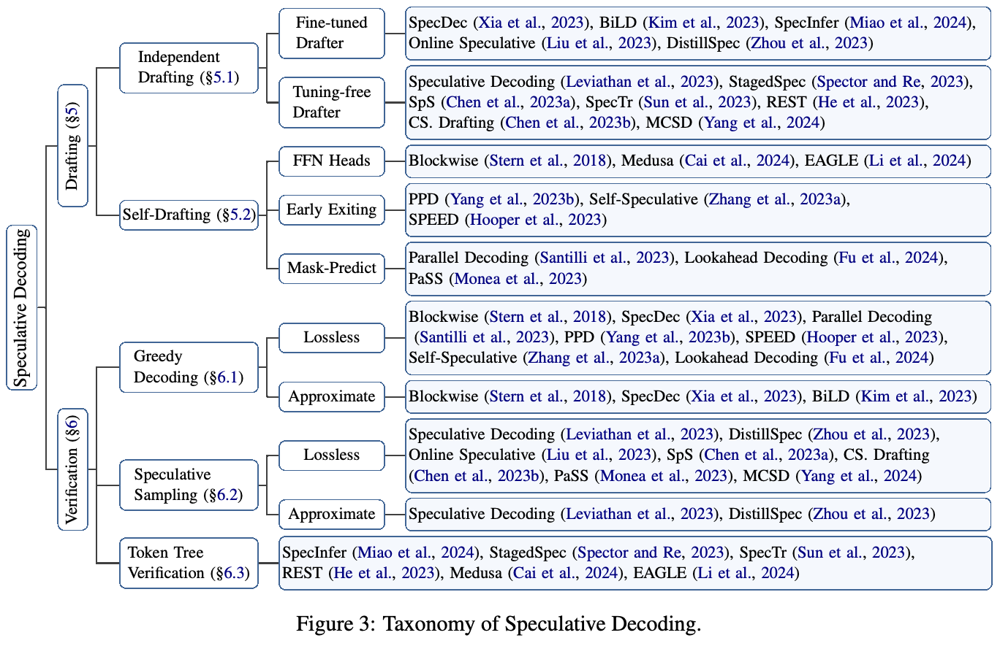
（接上页）使整个生成过程低效且耗时。
4.2 Speculative Decoding
遵循 Xia et al.（2023）、Leviathan et al.（2023）和 Chen et al.（2023a），我们给出如下形式化定义：
Speculative Decoding 是一种“先草拟、后验证”的 decoding 范式：每个 decoding 步骤先高效草拟多个未来 token，再用目标 LLM 并行验证所有这些 token，以加速推理。
算法 2 给出详细过程。下面深入讨论该范式的两个基本子步骤：草稿生成和验证。
草稿生成。每个 decoding 步骤先高效草拟多个未来 token，作为目标 LLM 输出的推测。形式上，给定输入序列 \(x_1,\ldots,x_t\) 和目标 LLM \(M_q\)，使用高效草稿模型 \(M_p\)，例如小 LM，decoding 接下来的 \(K\) 个草稿 token：
\[p_1,\ldots,p_K=\operatorname{DRAFT}(x_{\le t},M_p),\qquad\tilde{x}_i\sim p_i,\ i=1,\ldots,K.\tag{2}\]其中 DRAFT 表示第 5 节讨论的各种草稿生成策略，\(p\) 是 \(M_p\) 计算的条件概率分布，\(\tilde{x}_i\) 是从 \(p_i\) 采样的草稿 token。
验证。随后，目标 LLM \(M_q\) 并行验证这些草稿 token。形式上，给定输入序列 \(x_1,\ldots,x_t\) 和草稿 \(\tilde{x}_1,\ldots,\tilde{x}_K\)，同时计算 \(K+1\) 个概率分布：
\[q_i=M_q(x\mid x_{\le t},\tilde{x}_{<i}),\quad i=1,\ldots,K+1.\tag{3}\]然后按特定准则 \(\operatorname{VERIFY}(\tilde{x}_i,p_i,q_i)\) 验证每个草稿 token。仅满足准则的 token 被选为最终输出，确保质量符合目标 LLM 标准。否则，第一个未通过验证的草稿 token \(\tilde{x}_c\) 由 \(\operatorname{CORRECT}(p_c,q_c)\) 纠正。位置 \(c\) 后的全部草稿 token 被丢弃，以保证最终输出的高质量。如果全部通过验证，则按式（1）从 \(q_{K+1}\) 额外采样一个 token \(x_{t+K+1}\)。
草稿生成与验证不断迭代，直至满足终止条件，即 decoding 出 [EOS]，或句子达到最大长度。
值得注意的是，加速效果主要取决于每步草稿 token 的接受率（接下页）。
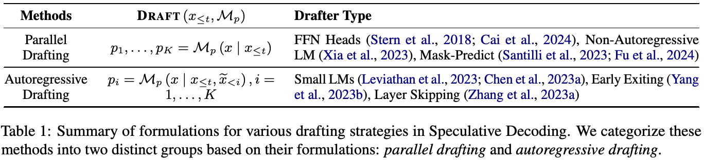
（接上页）该接受率受草稿质量、验证准则、草稿器与目标 LLM 的行为对齐等因素影响。草稿器自身的效率也决定总体加速。后续章节将深入讨论这些关键组成部分，如图 3 所示，系统分类这一有前景范式的最新研究趋势。
5 草稿生成
作为关键组件，草稿过程对加速比至关重要，主要由两项因素决定：草稿器 \(M_p\) 的推测准确率，以每步平均接受 token 数衡量；以及草稿生成延迟（Stern et al., 2018; Xia et al., 2023）。如何平衡高推测准确率与低草稿延迟，是主要挑战。本节分为独立草稿生成（§5.1）和自草稿生成（§5.2），其 \(\operatorname{DRAFT}(x_{\le t},M_p)\) 形式汇总于表 1。
5.1 独立草稿生成
为平衡推测准确率与效率，SpecDec（Xia et al., 2023）首次提出利用独立模型生成草稿。具体采用专门的非自回归 Transformer，每步同时草拟多个 token。模型使用深编码器、浅 decoder 架构以高效运行。虽然有优势，但 SpecDec 需要从头训练草稿模型，增加计算预算。
考虑现有 LLM 系列，例如 OPT（Zhang et al., 2022）、LLaMA（Touvron et al., 2023a,b），更直接高效的方式是直接使用同系列小 LM 作为草稿器，加速较大对应模型（Leviathan et al., 2023; Chen et al., 2023a; Spector and Re, 2023; Sun et al., 2023; Chen et al., 2023b）。例如，Leviathan et al.（2023）用 T5-small 为 T5-XXL 加速。这些现成小 LM 无需额外训练或架构修改，利于快速采用。并且，同系列模型共享 tokenizer、预训练语料和相似训练流程，其预测行为天然对齐。
5.2 自草稿生成
外部草稿模型虽有明显优势，但需要额外训练或寻找与目标 LLM 高度对齐的草稿模型。若没有更小对应模型，例如 LLaMA-7B（Touvron et al., 2023a,b），挑战更大。此外，在单系统集成两个不同模型会增加计算复杂性，尤其在分布式环境下（Cai et al., 2024）。
为此，许多研究提出利用目标 LLM 本身高效生成草稿（Stern et al., 2018; Santilli et al., 2023; Hooper et al., 2023; Cai et al., 2024; Fu et al., 2024; Du et al., 2024）。尤其是 Blockwise Decoding（Stern et al., 2018）和 Medusa（Cai et al., 2024）在 Transformer decoder 上加入 FFN 预测头，每步并行生成 token。相较外部草稿器，这些轻量头减少额外计算开销，适合分布式推理。另一类研究探索目标 LLM 内提前退出和跳层的草稿潜力（Yang et al., 2023b; Zhang et al., 2023a; Hooper et al., 2023）。例如，Yang et al.（2023b）引入额外子过程，在当前 decoding 步骤提前退出，从而提前开始草拟未来 token（接下页）。
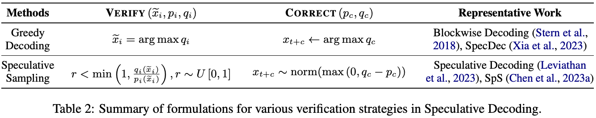
（接上页）同样，Self-Speculative（Zhang et al., 2023a）提出在推理中自适应跳过部分中间层，以高效生成草稿。
与扩展模型架构或改变推理流程的先前工作不同，Santilli et al.（2023）提出简单策略：直接在输入提示末尾追加多个 [PAD] token，实现并行生成。但这偏离 LLM 自回归预训练模式，导致草稿质量欠佳。Fu et al.（2024）为此将低质量草稿转换为多个 n-gram，提高推测准确率；Monea et al.（2023）引入多个可学习 [LA] token，并在小训练集上微调其 embeddings，增强并行 decoding 性能。
6 验证
每个 decoding 步骤都并行验证草稿 token，确保输出与目标 LLM 对齐。这也决定每步接受 token 数，是加速比的关键因素。本节汇总各种 \(\operatorname{VERIFY}(\tilde{x}_i,p_i,q_i)\) 准则（表 2），包括支持贪心 decoding（§6.1）及 speculative sampling（§6.2）的策略。此外介绍可提高接受率的 token 树验证（§6.3）。
6.1 贪心 decoding
早期工作关注支持贪心 decoding 的验证准则，保证输出与目标 LLM 贪心 decoding 结果完全相同（Stern et al., 2019; Sun et al., 2021; Xia et al., 2023）。形式上，给定输入 \(x_1,\ldots,x_t\)、草稿 \(\tilde{x}_1,\ldots,\tilde{x}_K\)，以及分别由式（2）、（3）计算的 \(p_1,\ldots,p_K\)、\(q_1,\ldots,q_K\)，第 \(i\) 个草稿 token 的验证准则为：
\[\tilde{x}_i=\arg\max q_i,\quad i=1,\ldots,K.\tag{4}\]首个未通过验证的草稿 token \(\tilde{x}_c\) 所处位置 \(c\) 为分岔位置。该位置输出 \(x_{t+c}\) 通过纠正策略调整，直接用 LLM 的 top-1 预测替换：
\[x_{t+c}\leftarrow\arg\max q_c.\tag{5}\]贪心验证准则简单清晰，因而多项后续研究用它展示方法有效性（Santilli et al., 2023; Yang et al., 2023b; Hooper et al., 2023; Zhang et al., 2023a; Fu et al., 2024）。然而，其严格匹配要求经常仅因为高质量草稿 token 不同于目标 LLM 的 top-1 预测，就将它们拒绝，从而限制加速比。
多项研究为此提出近似验证准则（Stern et al., 2018; Xia et al., 2023; Kim et al., 2023）。相较无损准则，它们稍微放宽匹配要求，更信任草稿，提高接受率。例如，SpecDec（Xia et al., 2023）仅要求草稿 token 位于目标 LLM 的 top-k 候选中；BiLD（Kim et al., 2023）提出回滚准则，仅当连续不匹配 token 数超过固定阈值时才拒绝草稿。
6.2 Speculative Sampling
在 Stern et al.（2019）之后，后续工作扩展该范式以支持各种采样方法（Leviathan et al., 2023; Chen et al., 2023a），在不改变输出分布的情况下加速目标 LLM 推理。形式上，给定初始序列 \(x_1,\ldots,x_t\)（接下页）。
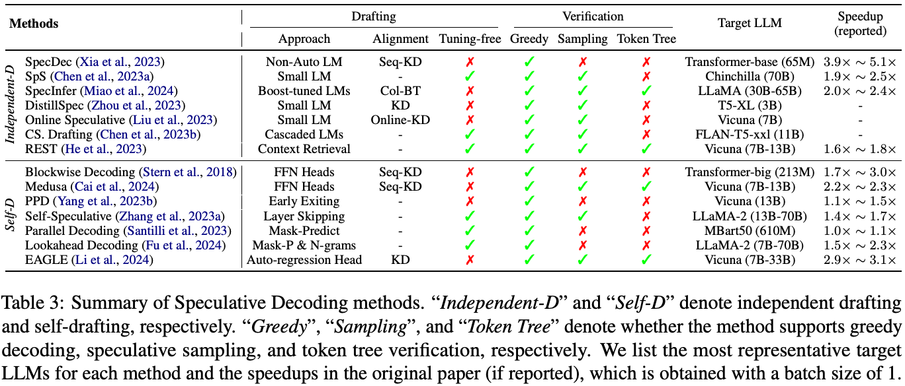
（接上页）草稿 token \(\tilde{x}_1,\ldots,\tilde{x}_K\) 和计算所得分布 \(p_1,\ldots,p_K\)、\(q_1,\ldots,q_K\)，第 \(i\) 个草稿 token 的验证准则为：
\[r<\min\left(1,\frac{q_i(\tilde{x}_i)}{p_i(\tilde{x}_i)}\right),\quad r\sim U[0,1].\tag{6}\]其中 \(r\) 是从均匀分布 \(U[0,1]\) 抽取的随机数；\(q_i(\tilde{x}_i)\)、\(p_i(\tilde{x}_i)\) 分别是 \(M_q\)、\(M_p\) 赋予 \(\tilde{x}_i\) 的概率；\(i=1,\ldots,K\)。也就是说，若 \(q_i(\tilde{x}_i)\ge p_i(\tilde{x}_i)\)，则接受；否则以 \(1-\frac{q_i(\tilde{x}_i)}{p_i(\tilde{x}_i)}\) 的概率拒绝。纠正策略从调整后的分布重新采样分岔位置 \(c\) 的输出 token：
\[x_{t+c}\sim\operatorname{norm}(\max(0,q_c-p_c)).\tag{7}\]Leviathan et al.（2023）和 Chen et al.（2023a）理论证明该准则保持与目标 LLM 相同的输出分布，因此被后续研究广泛采用（Liu et al., 2023; Zhou et al., 2023; Monea et al., 2023; Chen et al., 2023b）。除严格要求外，一些工作探索近似策略以提高接受率（Leviathan et al., 2023; Zhou et al., 2023）。例如，Leviathan et al.（2023）提出将式（6）的 \(p_i(\tilde{x}_i)\) 乘以宽松参数 \(l\in[0,1]\)，稍微放宽准则。
6.3 Token 树验证
以往策略只关注单条草稿序列，SpecInfer（Miao et al., 2024）则提出 token 树验证，使目标 LLM 可以并行验证多条草稿序列。
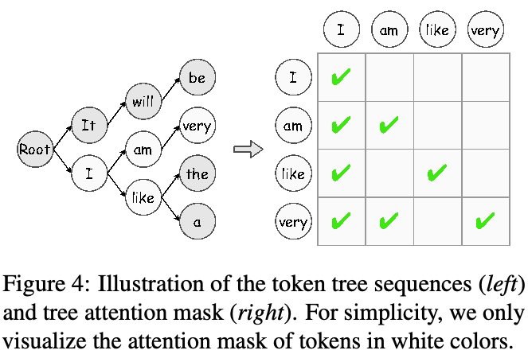
如图 4，它先通过共享前缀，将多条候选草稿合并为 token 树；再用专门设计的树式 attention 掩码，让 LLM 并行验证整个结构。近期研究探索多种候选草稿生成方式（Miao et al., 2024; Cai et al., 2024; He et al., 2023; Li et al., 2024）。例如，Miao et al.（2024）从不同 boost-tuned LM 生成多样草稿；Cai et al.（2024）组合每个 FFN 头的 top-k 预测，获得多个候选序列。
7 对齐
如第 5 节所示，加速比主要取决于推测准确率，而它又受到草稿器与目标 LLM 行为相似度影响。为改善这一点，现有研究探索不同知识蒸馏（KD）策略，使草稿输出与目标 LLM 对齐（Stern et al., 2018; Xia et al., 2023; Miao et al., 2024; Liu et al., 2023; Kim et al., 2023; Zhou et al., 2023）（接下页）。
具体而言，Blockwise Decoding 使用序列级知识蒸馏（Seq-KD）（Kim and Rush, 2016）对齐，在目标 LLM 生成的句子上训练草稿器。Miao et al.（2024）提出集体 boost-tuning（Col-BT），在训练数据上用 Seq-KD 微调多个小 LM，并将其聚合输出用作草稿，以提高推测准确率。
Seq-KD 虽有效，却忽略目标 LLM 概率分布，导致采样方法下性能下降。近期研究为此探索其他 KD 策略（Zhou et al., 2023; Liu et al., 2023）。DistillSpec（Zhou et al., 2023）在多种下游任务上全面比较不同 KD 策略。Liu et al.（2023）提出在线 KD，使用查询数据即时动态对齐草稿器与目标 LLM。
表 3 汇总现有方法的主要特征，包括草稿器类型或策略、对齐方式、支持的验证策略和报告加速比等。
8 Spec-Bench
随着研究快速发展，对领先方法比较分析的需求日益增加。然而，现有方法使用不同基准、设备及环境，难以公平比较。为此，我们引入覆盖不同应用场景的综合基准 Spec-Bench，并在第三方条件下系统比较开源方法。全部实验在相同设备和环境执行，以保证公平。
8.1 基准构建
为评估不同场景，Spec-Bench 包括六个子任务：多轮对话、翻译、摘要、问答、数学推理及检索增强生成。我们从六个常用数据集各随机选取 80 个实例：MT-bench（Zheng et al., 2023）、WMT14 DE-EN、CNN/Daily Mail（Nallapati et al., 2016）、Natural Questions（Kwiatkowski et al., 2019）、GSM8K（Cobbe et al., 2021）和 DPR（Karpukhin et al., 2020）。基准及具体设置见附录 B。
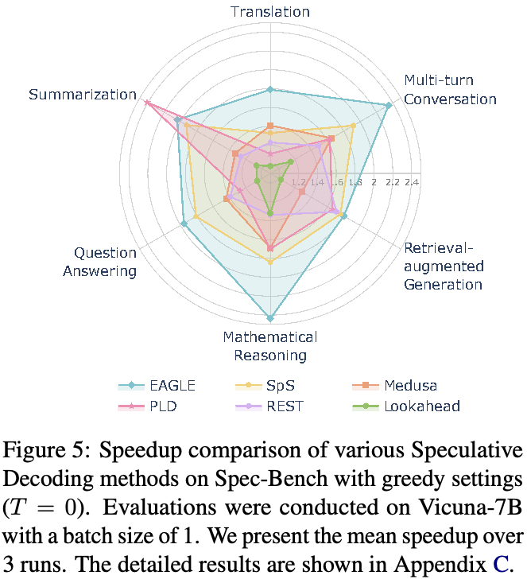
8.2 比较评估
主要评估在单块消费级 3090 GPU4 上，使用 FP16 精度的 Vicuna-7B。图 5 显示，贪心设置下，EAGLE（Li et al., 2024）在多数子任务上相较自回归 decoding 取得最高加速比（1.8–2.4 倍），数学推理尤其突出，约 2.4 倍。成功主要源于：（1）复用 LLM 的 KV cache 预测草稿 token，大幅降低草稿计算开销；（2）相较 Medusa（Cai et al., 2024），EAGLE 采用自回归草稿生成，推测更稳定准确。PLD（Saxena, 2023）擅长输入与输出高度相似的任务，例如摘要，约 2.4 倍加速；但在翻译和问答等任务中表现下降，加速比仅 1.1–1.3 倍。
我们还比较不同采样温度下的加速。如图 6，EAGLE 持续（接下页）。
4更强 A100 GPU 上的比较分析见附录 D。
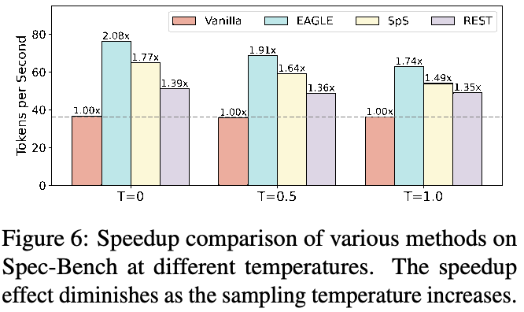
（接上页）在不同设置中优于其他方法，加速比为 1.7–2.1 倍。此外，所有方法的加速效果都随采样温度升高而下降。根据先前研究（Joao Gante, 2023; Spector and Re, 2023），这归因于较高温度下 speculative sampling 准则的计算复杂度增加。
9 挑战与未来方向
如何平衡推测准确率和草稿生成效率？如第 5 节，扩大草稿器可提高推测准确率，却会显著降低草稿效率，甚至总体加速比。因此必须平衡准确率与草稿延迟。现有策略中，行为对齐很有潜力，因为可在不增加延迟的情况下提高准确率。但尽管已有进展（Miao et al., 2024; Zhou et al., 2023; Liu et al., 2023），仍有很大改进空间。例如，分岔位置后草稿全部被丢弃，可以鼓励草稿器优先保证较早位置 token 的生成质量。除对齐外，草稿质量（Fu et al., 2024）、推测长度的确定（Su et al., 2023）也影响准确率，值得进一步探索。
如何用于 batch 推理？目前只有少数实现支持 batch 推理，例如 EAGLE5 和 SpS6。而 batch 推理是 LLM 实时服务高效管理用户输入的关键。主要挑战有两方面：（1）由于推测准确率不同，每个句子的 decoding 步数不同，因此整个 batch 的延迟取决于最慢样本；（2）额外计算复杂度，尤其采样设置下，会随 batch 大小增加。如何在 batch 推理中保持良好加速，并结合 continuous batching（Yu et al., 2022）等先进技术，值得研究。
如何与其他领先技术结合？作为通用范式，Speculative Decoding 已展示与先进技术结合的潜力（Yang et al., 2023a; Zhang et al., 2023b; Li et al., 2023）。例如，Yuan et al.（2023）结合对比 decoding（Li et al., 2023），不仅加速推理，也显著提高生成质量。除纯文本 LLM 外，用于图像合成、文本转语音、视频生成等多模态推理，也是有趣而有价值的方向。另一个潜力方向是与 vLLM（Kwon et al., 2023）、非自回归生成（Du et al., 2021, 2022）和 FlashAttention（Dao et al., 2022; Dao, 2023）等高效方法结合，进一步提高 LLM 服务推理效率。
10 结论
本文全面综述 Speculative Decoding，包括范式演进、形式化定义与表述、现有方法系统分类以及领先技术深入回顾。此外，我们引入广泛评估基准 Spec-Bench，比较评估代表性方法。据我们所知，这是首篇专门综述该领域的文章。希望厘清当前研究格局，并为未来方向提供见解。
局限性
本文详细考察并分类当前方法和新兴趋势，也比较分析领先开源方法，帮助研究者深入理解各模型优点与局限。除 Speculative Decoding 外，我们也认识到 vLLM（Kwon et al., 2023）、continuous batching（Yu et al., 2022）等高效 NLP 策略。未来计划扩展讨论它们的整合。此外，由于没有可用的 batch Speculative Decoding 实现，本评估无法覆盖这一方面。我们计划后续实验评估不同 batch 大小下的加速效果。
伦理声明
实验数据集均公开发布，并通过英语人机交互进行标注。该过程中保护用户隐私，数据集不含个人信息。所使用的科学产物以宽松许可供研究使用，本文用途符合其预期用途。因此，我们认为本研究符合 ACL 伦理要求。
致谢
感谢所有匿名审稿人在评审中提出宝贵意见。本工作得到香港研究资助局部分支持（15207122、15213323）。
参考文献
Christopher Bryant, Zheng Yuan, Muhammad Reza Qorib, Hannan Cao, Hwee Tou Ng, and Ted Briscoe. 2023. 语法纠错：最新技术综述。 Comput. Linguistics, 49(3):643–701. F. Warren Burton. 1985. 推测计算、并行性与函数式编程。 IEEE Trans. Computers, 34(12):1190–1193. Deng Cai, Yan Wang, Lemao Liu, and Shuming Shi. 2022. 检索增强文本生成的最新进展。 In SIGIR ’22: The 45th International ACM SIGIR Conference on Research and Development in Information Retrieval, Madrid, Spain, July 11 - 15, 2022, pages 3417–3419. ACM. Tianle Cai, Yuhong Li, Zhengyang Geng, Hongwu Peng, Jason D. Lee, Deming Chen, and Tri Dao. 2024. Medusa：使用多个 decoding 头的简易 LLM 推理加速框架。 CoRR, abs/2401.10774. Charlie Chen, Sebastian Borgeaud, Geoffrey Irving, Jean-Baptiste Lespiau, Laurent Sifre, and John Jumper. 2023a. 通过 speculative sampling 加速大语言模型 decoding。 CoRR, abs/2302.01318. Ziyi Chen, Xiaocong Yang, Jiacheng Lin, Chenkai Sun, Jie Huang, and Kevin Chen-Chuan Chang. 2023b. 级联推测草稿生成，进一步加速 LLM 推理。 Wei-Lin Chiang, Zhuohan Li, Zi Lin, Ying Sheng, Zhanghao Wu, Hao Zhang, Lianmin Zheng, Siyuan Zhuang, Yonghao Zhuang, Joseph E. Gonzalez, Ion Stoica, and Eric P. Xing. 2023. Vicuna：以 90%* ChatGPT 质量令 GPT-4 印象深刻的开源聊天机器人。 Aakanksha Chowdhery, Sharan Narang, Jacob Devlin, Maarten Bosma, Gaurav Mishra, Adam Roberts, Paul Barham, Hyung Won Chung, Charles Sutton, Sebastian Gehrmann, Parker Schuh, Kensen Shi, Sasha Tsvyashchenko, Joshua Maynez, Abhishek Rao, Parker Barnes, Yi Tay, Noam Shazeer, Vinodkumar Prabhakaran, Emily Reif, Nan Du, Ben Hutchinson, Reiner Pope, James Bradbury, Jacob Austin, Michael Isard, Guy Gur-Ari, Pengcheng Yin, Toju Duke, Anselm Levskaya, Sanjay Ghemawat, Sunipa Dev, Henryk Michalewski, Xavier Garcia, Vedant Misra, Kevin Robinson, Liam Fedus, Denny Zhou, Daphne Ippolito, David Luan, Hyeontaek Lim, Barret Zoph, Alexander Spiridonov, Ryan Sepassi, David Dohan, Shivani Agrawal, Mark Omernick, Andrew M. Dai, Thanumalayan Sankaranarayana Pillai, Marie Pellat, Aitor Lewkowycz, Erica Moreira, Rewon Child, Oleksandr Polozov, Katherine Lee, Zongwei Zhou, Xuezhi Wang, Brennan Saeta, Mark Diaz, Orhan Firat, Michele Catasta, Jason Wei, Kathy Meier-Hellstern, Douglas Eck, Jeff Dean, Slav Petrov, and Noah Fiedel. 2023. PaLM：利用 Pathways 扩展语言建模。 J. Mach. Learn. Res., 24:240:1– 240:113. Karl Cobbe, Vineet Kosaraju, Mohammad Bavarian, Mark Chen, Heewoo Jun, Lukasz Kaiser, Matthias Plappert, Jerry Tworek, Jacob Hilton, Reiichiro Nakano, Christopher Hesse, and John Schulman. 2021. 训练验证器以解决数学应用题。 CoRR, abs/2110.14168. Tri Dao. 2023. FlashAttention-2：通过更好的并行性和工作划分加速 attention。 CoRR, abs/2307.08691. Tri Dao, Daniel Y . Fu, Stefano Ermon, Atri Rudra, and Christopher Ré. 2022. FlashAttention：具有 IO 感知能力的快速、内存高效精确 attention。 In Advances in Neural Information Processing Systems 35: Annual Conference on Neural
本页原文链接
- https://doi.org/10.1162/COLI_A_00478
- https://doi.org/10.1109/TC.1985.6312218
- https://doi.org/10.1145/3477495.3532682
- https://doi.org/10.48550/ARXIV.2401.10774
- https://doi.org/10.48550/arXiv.2302.01318
- http://arxiv.org/abs/2312.11462
- https://lmsys.org/blog/2023-03-30-vicuna/
- http://jmlr.org/papers/v24/22-1144.html
- http://arxiv.org/abs/2110.14168
- https://doi.org/10.48550/ARXIV.2307.08691
- http://papers.nips.cc/paper_files/paper/2022/hash/67d57c32e20fd0a7a302cb81d36e40d5-Abstract-Conference.html
Information Processing Systems 2022, NeurIPS 2022, New Orleans, LA, USA, November 28 December 9, 2022. Cunxiao Du, Jing Jiang, Yuanchen Xu, Jiawei Wu, Sicheng Yu, Yongqi Li, Shenggui Li, Kai Xu, Liqiang Nie, Zhaopeng Tu, and Yang You. 2024. 披着斗篷滑翔：一种轻松加速 speculative decoding 的方法。 CoRR, abs/2402.02082. Cunxiao Du, Zhaopeng Tu, and Jing Jiang. 2021. 面向非自回归机器翻译的顺序无关交叉熵。 In Proceedings of the 38th International Conference on Machine Learning, ICML 2021, 18-24 July 2021, Virtual Event, volume 139 of Proceedings of Machine Learning Research, pages 2849–2859. PMLR. Cunxiao Du, Zhaopeng Tu, Longyue Wang, and Jing Jiang. 2022. ngram-OAXE：面向非自回归机器翻译的基于短语的顺序无关交叉熵。 In Proceedings of the 29th International Conference on Computational Linguistics, COLING 2022, Gyeongju, Republic of Korea, October 12-17, 2022, pages 5035–5045. International Committee on Computational Linguistics. Yichao Fu, Peter Bailis, Ion Stoica, and Hao Zhang. 2024. 使用 Lookahead Decoding 打破 LLM 推理的顺序依赖。 Tao Ge, Heming Xia, Xin Sun, Si-Qing Chen, and Furu Wei. 2022. 通过激进 decoding 无损加速 seq2seq 生成。 CoRR, abs/2205.10350. Zhenyu He, Zexuan Zhong, Tianle Cai, Jason D. Lee, and Di He. 2023. REST：基于检索的 speculative decoding。 CoRR, abs/2311.08252. John L. Hennessy and David A. Patterson. 2012. 计算机体系结构：量化研究方法，第 5 版。 Morgan Kaufmann. Coleman Hooper, Sehoon Kim, Hiva Mohammadzadeh, Hasan Genc, Kurt Keutzer, Amir Gholami, and Yakun Sophia Shao. 2023. SPEED：用于高效 decoding 的推测流水线执行。 CoRR, abs/2310.12072. Albert Q. Jiang, Alexandre Sablayrolles, Arthur Mensch, Chris Bamford, Devendra Singh Chaplot, Diego de Las Casas, Florian Bressand, Gianna Lengyel, Guillaume Lample, Lucile Saulnier, Lélio Renard Lavaud, Marie-Anne Lachaux, Pierre Stock, Teven Le Scao, Thibaut Lavril, Thomas Wang, Timothée Lacroix, and William El Sayed. 2023. Mistral 7B。 CoRR, abs/2310.06825. Albert Q. Jiang, Alexandre Sablayrolles, Antoine Roux, Arthur Mensch, Blanche Savary, Chris Bamford, Devendra Singh Chaplot, Diego de las Casas, Emma Bou Hanna, Florian Bressand, Gianna Lengyel, Guillaume Bour, Guillaume Lample, Lélio Renard Lavaud, Lucile Saulnier, MarieAnne Lachaux, Pierre Stock, Sandeep Subramanian, Sophia Yang, Szymon Antoniak, Teven Le Scao, Théophile Gervet, Thibaut Lavril, Thomas Wang, Timothée Lacroix, and William El Sayed. 2024. Mixtral 专家混合模型。 Joao Gante. 2023. 辅助生成：迈向低延迟文本生成的新方向。 Vladimir Karpukhin, Barlas Oguz, Sewon Min, Patrick S. H. Lewis, Ledell Wu, Sergey Edunov, Danqi Chen, and Wen-tau Yih. 2020. 面向开放域问答的稠密段落检索。 In Proceedings of the 2020 Conference on Empirical Methods in Natural Language Processing, EMNLP 2020, Online, November 16-20, 2020, pages 6769– 6781. Association for Computational Linguistics. Sehoon Kim, Karttikeya Mangalam, Suhong Moon, Jitendra Malik, Michael W. Mahoney, Amir Gholami, and Kurt Keutzer. 2023. 使用大小 decoder 进行 speculative decoding。 In Advances in Neural Information Processing Systems 36: Annual Conference on Neural Information Processing Systems 2023, NeurIPS 2023, New Orleans, LA, USA, December 10 - 16, 2023. Yoon Kim and Alexander M. Rush. 2016. 序列级知识蒸馏。 In Proceedings of the 2016 Conference on Empirical Methods in Natural Language Processing, EMNLP 2016, Austin, Texas, USA, November 1-4, 2016, pages 1317–1327. The Association for Computational Linguistics. Tom Kwiatkowski, Jennimaria Palomaki, Olivia Redfield, Michael Collins, Ankur Parikh, Chris Alberti, Danielle Epstein, Illia Polosukhin, Jacob Devlin, Kenton Lee, Kristina Toutanova, Llion Jones, Matthew Kelcey, Ming-Wei Chang, Andrew M. Dai, Jakob Uszkoreit, Quoc Le, and Slav Petrov. 2019. Natural Questions：面向问答研究的基准。 Transactions of the Association for Computational Linguistics, 7:452–466. Woosuk Kwon, Zhuohan Li, Siyuan Zhuang, Ying Sheng, Lianmin Zheng, Cody Hao Yu, Joseph Gonzalez, Hao Zhang, and Ion Stoica. 2023. 通过 PagedAttention 为大语言模型服务提供高效内存管理。 In Proceedings of the 29th Symposium on Operating Systems Principles, SOSP 2023, Koblenz, Germany, October 23-26, 2023, pages 611–626. ACM. Yaniv Leviathan, Matan Kalman, and Yossi Matias. 2023. 通过 speculative decoding 实现 transformer 快速推理。 In International Conference on Machine Learning, ICML 2023, 23-29 July 2023, Honolulu, Hawaii, USA, volume 202 of Proceedings of Machine Learning Research, pages 19274–19286. PMLR. Xiang Lisa Li, Ari Holtzman, Daniel Fried, Percy Liang, Jason Eisner, Tatsunori Hashimoto, Luke Zettlemoyer, and Mike Lewis. 2023. 对比 decoding：将开放式文本生成视为优化。 In Proceedings of the 61st Annual Meeting of the
本页原文链接
- https://doi.org/10.48550/ARXIV.2402.02082
- http://proceedings.mlr.press/v139/du21c.html
- https://aclanthology.org/2022.coling-1.446
- http://arxiv.org/abs/2402.02057
- https://doi.org/10.48550/ARXIV.2205.10350
- https://doi.org/10.48550/ARXIV.2311.08252
- https://doi.org/10.48550/ARXIV.2310.12072
- https://doi.org/10.48550/ARXIV.2310.06825
- http://arxiv.org/abs/2401.04088
- https://doi.org/10.57967/hf/0638
- https://doi.org/10.18653/V1/2020.EMNLP-MAIN.550
- http://papers.nips.cc/paper_files/paper/2023/hash/7b97adeafa1c51cf65263459ca9d0d7c-Abstract-Conference.html
- https://doi.org/10.18653/V1/D16-1139
- https://doi.org/10.1162/tacl_a_00276
- https://doi.org/10.1145/3600006.3613165
- https://proceedings.mlr.press/v202/leviathan23a.html
- https://doi.org/10.18653/V1/2023.ACL-LONG.687
Association for Computational Linguistics (V olume 1: Long Papers), ACL 2023, Toronto, Canada, July 9-14, 2023, pages 12286–12312. Association for Computational Linguistics. Yuhui Li, Fangyun Wei, Chao Zhang, and Hongyang Zhang. 2024. EAGLE：Speculative Sampling 需要重新思考特征不确定性。 Xiaoxuan Liu, Lanxiang Hu, Peter Bailis, Ion Stoica, Zhijie Deng, Alvin Cheung, and Hao Zhang. 2023. 在线 speculative decoding。 CoRR, abs/2310.07177. Xupeng Miao, Gabriele Oliaro, Zhihao Zhang, Xinhao Cheng, Zeyu Wang, Zhengxin Zhang, Rae Ying Yee Wong, Alan Zhu, Lijie Yang, Xiaoxiang Shi, Chunan Shi, Zhuoming Chen, Daiyaan Arfeen, Reyna Abhyankar, and Zhihao Jia. 2024. SpecInfer：通过树式推测推理与验证加速大语言模型服务。 In Proceedings of the 29th ACM International Conference on Architectural Support for Programming Languages and Operating Systems, V olume3, ASPLOS ’24, page 932–949, New York, NY , USA. Association for Computing Machinery. Giovanni Monea, Armand Joulin, and Edouard Grave. 2023. PaSS：并行 speculative sampling。 CoRR, abs/2311.13581. Ramesh Nallapati, Bowen Zhou, Cícero Nogueira dos Santos, Çaglar Gülçehre, and Bing Xiang. 2016. 使用序列到序列 RNN 及其扩展进行生成式文本摘要。 In Proceedings of the 20th SIGNLL Conference on Computational Natural Language Learning, CoNLL 2016, Berlin, Germany, August 11-12, 2016, pages 280–290. ACL. OpenAI. 2023. GPT-4 技术报告。 CoRR, abs/2303.08774. David A. Patterson. 2004. 延迟落后于带宽。 Commun. ACM, 47(10):71–75. Andrea Santilli, Silvio Severino, Emilian Postolache, Valentino Maiorca, Michele Mancusi, Riccardo Marin, and Emanuele Rodolà. 2023. 通过并行 decoding 加速翻译 transformer 推理。 In Proceedings of the 61st Annual Meeting of the Association for Computational Linguistics (V olume 1: Long Papers), ACL 2023, Toronto, Canada, July 9-14, 2023, pages 12336–12355. Association for Computational Linguistics. Apoorv Saxena. 2023. 提示查找 decoding。 Noam Shazeer. 2019. 快速 transformer decoding：只需一个写入头。 CoRR, abs/1911.02150. Benjamin Spector and Chris Re. 2023. 通过分阶段 speculative decoding 加速 LLM 推理。 CoRR, abs/2308.04623. Mitchell Stern, William Chan, Jamie Kiros, and Jakob Uszkoreit. 2019. Insertion Transformer：通过插入操作实现灵活序列生成。 In Proceedings of the 36th International Conference on Machine Learning, ICML 2019, 9-15 June 2019, Long Beach, California, USA, volume 97 of Proceedings of Machine Learning Research, pages 5976–5985. PMLR. Mitchell Stern, Noam Shazeer, and Jakob Uszkoreit. 2018. 深度自回归模型的分块并行 decoding。 In Advances in Neural Information Processing Systems 31: Annual Conference on Neural Information Processing Systems 2018, NeurIPS 2018, December 3-8, 2018, Montréal, Canada, pages 10107–10116. Qidong Su, Christina Giannoula, and Gennady Pekhimenko. 2023. 大语言模型服务中 speculative decoding 与 batch 处理的协同。 CoRR, abs/2310.18813. Xin Sun, Tao Ge, Furu Wei, and Houfeng Wang. 2021. 通过浅层激进 decoding 实现即时语法纠错。 In Proceedings of the 59th Annual Meeting of the Association for Computational Linguistics and the 11th International Joint Conference on Natural Language Processing, ACL/IJCNLP 2021, (V olume 1: Long Papers), Virtual Event, August 1-6, 2021, pages 5937–5947. Association for Computational Linguistics. Ziteng Sun, Ananda Theertha Suresh, Jae Hun Ro, Ahmad Beirami, Himanshu Jain, and Felix X. Yu. 2023. SpecTr：通过最优传输实现快速 speculative decoding。 In Advances in Neural Information Processing Systems 36: Annual Conference on Neural Information Processing Systems 2023, NeurIPS 2023, New Orleans, LA, USA, December 10 - 16, 2023. Hugo Touvron, Thibaut Lavril, Gautier Izacard, Xavier Martinet, Marie-Anne Lachaux, Timothée Lacroix, Baptiste Rozière, Naman Goyal, Eric Hambro, Faisal Azhar, Aurélien Rodriguez, Armand Joulin, Edouard Grave, and Guillaume Lample. 2023a. Llama：开放而高效的基础语言模型。 CoRR, abs/2302.13971. Hugo Touvron, Louis Martin, Kevin Stone, Peter Albert, Amjad Almahairi, Yasmine Babaei, Nikolay Bashlykov, Soumya Batra, Prajjwal Bhargava, Shruti Bhosale, Dan Bikel, Lukas Blecher, Cristian CantonFerrer, Moya Chen, Guillem Cucurull, David Esiobu, Jude Fernandes, Jeremy Fu, Wenyin Fu, Brian Fuller, Cynthia Gao, Vedanuj Goswami, Naman Goyal, Anthony Hartshorn, Saghar Hosseini, Rui Hou, Hakan Inan, Marcin Kardas, Viktor Kerkez, Madian Khabsa, Isabel Kloumann, Artem Korenev, Punit Singh Koura, Marie-Anne Lachaux, Thibaut Lavril, Jenya Lee, Diana Liskovich, Yinghai Lu, Yuning Mao, Xavier Martinet, Todor Mihaylov, Pushkar Mishra, Igor Molybog, Yixin Nie, Andrew Poulton, Jeremy Reizenstein, Rashi Rungta, Kalyan Saladi, Alan Schelten,
本页原文链接
- http://arxiv.org/abs/2401.15077
- https://doi.org/10.48550/ARXIV.2310.07177
- https://doi.org/10.1145/3620666.3651335
- https://doi.org/10.48550/ARXIV.2311.13581
- https://doi.org/10.18653/V1/K16-1028
- https://doi.org/10.48550/ARXIV.2303.08774
- https://doi.org/10.1145/1022594.1022596
- https://doi.org/10.18653/v1/2023.acl-long.689
- https://github.com/apoorvumang/prompt-lookup-decoding/
- http://arxiv.org/abs/1911.02150
- https://doi.org/10.48550/arXiv.2308.04623
- http://proceedings.mlr.press/v97/stern19a.html
- https://proceedings.neurips.cc/paper/2018/hash/c4127b9194fe8562c64dc0f5bf2c93bc-Abstract.html
- https://doi.org/10.48550/ARXIV.2310.18813
- https://doi.org/10.18653/v1/2021.acl-long.462
- http://papers.nips.cc/paper_files/paper/2023/hash/6034a661584af6c28fd97a6f23e56c0a-Abstract-Conference.html
- https://doi.org/10.48550/arXiv.2302.13971
Ruan Silva, Eric Michael Smith, Ranjan Subramanian, Xiaoqing Ellen Tan, Binh Tang, Ross Taylor, Adina Williams, Jian Xiang Kuan, Puxin Xu, Zheng Yan, Iliyan Zarov, Yuchen Zhang, Angela Fan, Melanie Kambadur, Sharan Narang, Aurélien Rodriguez, Robert Stojnic, Sergey Edunov, and Thomas Scialom. 2023b. Llama 2：开放基础模型与微调对话模型。 CoRR, abs/2307.09288. Yu Wang, Yuelin Wang, Kai Dang, Jie Liu, and Zhuo Liu. 2021. 语法纠错全面综述。 ACM Trans. Intell. Syst. Technol., 12(5):65:1–65:51. Heming Xia, Tao Ge, Peiyi Wang, Si-Qing Chen, Furu Wei, and Zhifang Sui. 2023. Speculative Decoding：利用推测执行加速 seq2seq 生成。 In Findings of the Association for Computational Linguistics: EMNLP 2023, Singapore, December 6-10, 2023, pages 3909– 3925. Association for Computational Linguistics. Daliang Xu, Wangsong Yin, Xin Jin, Ying Zhang, Shiyun Wei, Mengwei Xu, and Xuanzhe Liu. 2023. LLMCad：快速可扩展的端侧大语言模型推理。 CoRR, abs/2309.04255. Nan Yang, Tao Ge, Liang Wang, Binxing Jiao, Daxin Jiang, Linjun Yang, Rangan Majumder, and Furu Wei. 2023a. 借助参考进行推理：无损加速大语言模型。 arXiv preprint arXiv:2304.04487. Sen Yang, Shujian Huang, Xinyu Dai, and Jiajun Chen. 2024. 多候选 speculative decoding。 CoRR, abs/2401.06706. Seongjun Yang, Gibbeum Lee, Jaewoong Cho, Dimitris S. Papailiopoulos, and Kangwook Lee. 2023b. 预测式流水线 decoding：精确 LLM decoding 的计算—延迟权衡。 CoRR, abs/2307.05908. Gyeong-In Yu, Joo Seong Jeong, Geon-Woo Kim, Soojeong Kim, and Byung-Gon Chun. 2022. Orca：基于 transformer 的生成式模型的分布式服务系统。 In 16th USENIX Symposium on Operating Systems Design and Implementation, OSDI 2022, Carlsbad, CA, USA, July 11-13, 2022, pages 521–538. USENIX Association. Hongyi Yuan, Keming Lu, Fei Huang, Zheng Yuan, and Chang Zhou. 2023. 推测对比 decoding。 CoRR, abs/2311.08981. Jun Zhang, Jue Wang, Huan Li, Lidan Shou, Ke Chen, Gang Chen, and Sharad Mehrotra. 2023a. Draft & Verify：通过自推测 decoding 无损加速大语言模型。 CoRR, abs/2309.08168. Susan Zhang, Stephen Roller, Naman Goyal, Mikel Artetxe, Moya Chen, Shuohui Chen, Christopher Dewan, Mona T. Diab, Xian Li, Xi Victoria Lin, Todor Mihaylov, Myle Ott, Sam Shleifer, Kurt Shuster, Daniel Simig, Punit Singh Koura, Anjali Sridhar, Tianlu Wang, and Luke Zettlemoyer. 2022. OPT：开放预训练 transformer 语言模型。 CoRR, abs/2205.01068. Zhihao Zhang, Alan Zhu, Lijie Yang, Yihua Xu, Lanting Li, Phitchaya Mangpo Phothilimthana, and Zhihao Jia. 2023b. 利用推测加速检索增强语言模型服务。 In Submitted to The Twelfth International Conference on Learning Representations. Under review. Lianmin Zheng, Wei-Lin Chiang, Ying Sheng, Siyuan Zhuang, Zhanghao Wu, Yonghao Zhuang, Zi Lin, Zhuohan Li, Dacheng Li, Eric Xing, Hao Zhang, Joseph E. Gonzalez, and Ion Stoica. 2023. 使用 MT-bench 和 Chatbot Arena 评估 LLM-as-a-Judge。 In Thirty-seventh Conference on Neural Information Processing Systems Datasets and Benchmarks Track. Yongchao Zhou, Kaifeng Lyu, Ankit Singh Rawat, Aditya Krishna Menon, Afshin Rostamizadeh, Sanjiv Kumar, Jean-François Kagy, and Rishabh Agarwal. 2023. DistillSpec：通过知识蒸馏改善 speculative decoding。
本页原文链接
- https://doi.org/10.48550/ARXIV.2307.09288
- https://doi.org/10.1145/3474840
- https://doi.org/10.18653/V1/2023.FINDINGS-EMNLP.257
- https://doi.org/10.48550/ARXIV.2309.04255
- https://doi.org/10.48550/ARXIV.2401.06706
- https://doi.org/10.48550/ARXIV.2307.05908
- https://www.usenix.org/conference/osdi22/presentation/yu
- https://doi.org/10.48550/ARXIV.2311.08981
- https://doi.org/10.48550/arXiv.2309.08168
- https://doi.org/10.48550/arXiv.2205.01068
- https://openreview.net/forum?id=vkzPuZJ80a
- https://openreview.net/forum?id=uccHPGDlao
- http://arxiv.org/abs/2310.08461
附录
A 应用
除作为通用范式外，近期工作表明，一些变体在特定任务上尤其有效。另一些研究将该范式用于某些应用独有的延迟问题，实现推理加速。下面详细介绍这些有前景的工作。
近期研究强调，它特别适合模型输入与输出高度相似的任务（Sun et al., 2021; Ge et al., 2022; Yang et al., 2023a），例如语法纠错（Wang et al., 2021; Bryant et al., 2023）和检索增强生成（Cai et al., 2022）。这些方法引入专门形式，直接将用户初始输入或检索上下文作为草稿。例如，语法纠错上的早期尝试 SAD（Sun et al., 2021）以有语法错误的输入句为草稿，由 LLM 并行验证整个句子，获得 9–12 倍加速。同样，LLMA（Yang et al., 2023a）从参考中选择文本片段为草稿，在检索增强生成、缓存辅助生成和多轮对话等实际应用中取得 2–3 倍加速。
此外，RaLMSpec（Zhang et al., 2023b）用该范式加速检索增强语言模型（RaLM）。它指出，迭代 RaLM 的主要延迟瓶颈是频繁检索庞大知识库，因此提出维护本地缓存以进行推测检索，在输出相同的前提下约加速 2 倍。LLMCad（Xu et al., 2023）将其用于端侧 LLM 推理：以可驻留设备内存的小型实时 LM 生成草稿，目标 LLM 仅负责并行验证。这样有效减少权重反复释放和加载，相较现有引擎加速 9.3 倍。
B 实验细节
B.1 Spec-Bench 细节
为评估不同场景中的加速性能，我们开发了覆盖六项任务的综合基准 Spec-Bench。它整合先前研究（Cai et al., 2024; Li et al., 2024）采用的多轮对话基准 MT-bench（Zheng et al., 2023），便于与早期研究比较。此外加入两项输入引导任务：摘要和检索增强生成（RAG），二者输入提示与目标输出显著重叠。我们分别选用 CNN/Daily Mail（Nallapati et al., 2016）和 Natural Questions（Kwiatkowski et al., 2019）。具体地，RAG 子任务将 DPR（Karpukhin et al., 2020）检索的 top-5 文档与每个问题拼接，构成输入提示。
此外还加入翻译、问答、数学推理三项子任务，以全面评估多样场景下的加速能力，分别使用 WMT14 DE-EN、Natural Questions 和 GSM8K（Cobbe et al., 2021）。从每项测试集随机选择 80 个实例评估，详细组成见表 4。
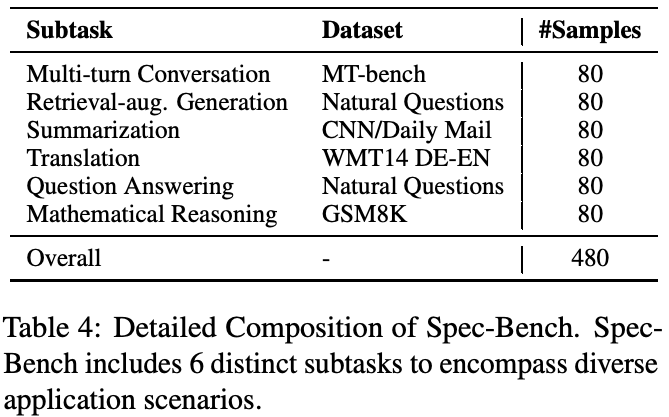
B.2 实现细节
我们选取六种有代表性、开源且无 bug 的方法进行比较。具体而言，作为开创性工作的 SpS（Chen et al., 2023a）利用同系列较小 LM 作为草稿器（接下页）。
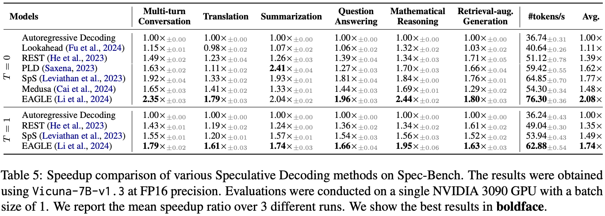
（接上页）加速 LLM 推理。Medusa（Cai et al., 2024）和 EAGLE（Li et al., 2024）在目标 LLM 中加入轻量预测头，高效草拟 token。Lookahead（Fu et al., 2024）在输入提示末尾加入多个特殊 token 并行草拟，再转换为 n-gram 候选。PLD（Saxena, 2023）是 LLMA（Yang et al., 2023a）的代码实现7，从输入中选取文本片段作为草稿。REST（He et al., 2023）根据输入提示，从语料检索相关草稿。
实验使用 Vicuna-v1.3 系列（Zheng et al., 2023）。SpS 采用 Hugging Face 实现8，以 Yang et al.（2024）提供的 vicuna-68m-v1.3 为草稿器。Lookahead9 和 PLD 使用默认参数。主要实验采用 PyTorch 2.0.1、CUDA 11.8，单块消费级 NVIDIA GeForce RTX 3090 GPU（24GB）和 12 核 CPU。进一步分析在更强的 NVIDIA A100 GPU（80GB）、64 核 CPU、CUDA 11.4 下进行。
C 主要实验结果细节
表 5 给出主要分析的详细结果，包括贪心 decoding（\(T=0\)）和 speculative sampling（\(T=1\)）。EAGLE（Li et al., 2024）在各子任务表现突出，总体加速为 1.6–2.4 倍。PLD（Saxena, 2023）在输入输出显著重叠时很高效。例如，从问答到检索增强生成，PLD 加速比由 1.27 倍上升至 1.66 倍，说明当输入包含相关文档时它很有效。多数方法在翻译任务上的加速欠佳，我们推测可能因为预训练语料缺乏多语数据。
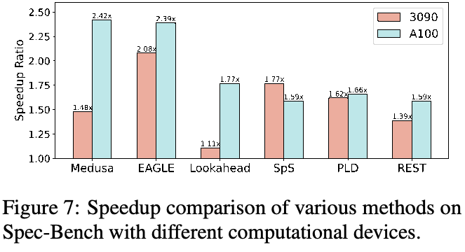
D A100 上的进一步分析
本节使用单块 NVIDIA A100 GPU，在 Spec-Bench 上全面分析领先方法，深入讨论计算硬件、模型规模和计算精度的影响。所有实验在相同设备和环境运行，确保公平。
D.1 计算设备
首先讨论计算设备演进的影响。如图 7，多数方法在高性能 GPU 上使用时，加速效果明显增强，例如（接下页）。
7https://github.com/apoorvumang/prompt-lookup-decoding
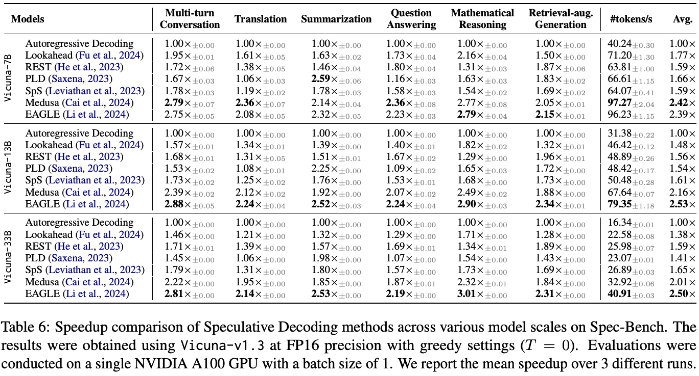
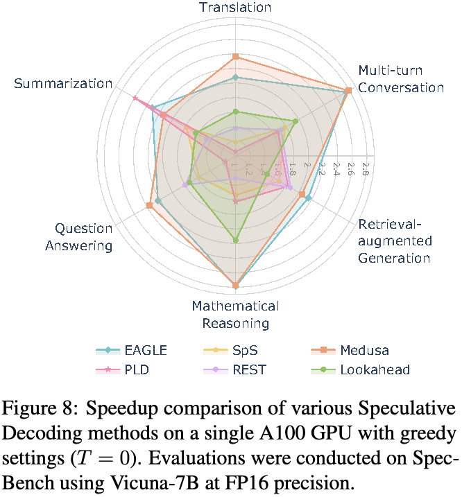
（接上页）NVIDIA A100。改善主要因为更先进设备具有更多空闲计算资源，可由 Speculative Decoding 利用来加速。评估方法中，Medusa（Cai et al., 2024）与 Lookahead（Fu et al., 2024）改善最明显：Medusa 从 1.48 倍上升至 2.42 倍，Lookahead 从 1.11 倍上升至 1.77 倍。这说明这些方法会从 H100 等不断发展的计算硬件中进一步受益。
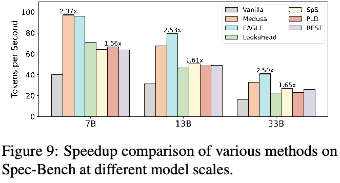
图 8 展示单块 A100 GPU 上各方法的比较，详细结果见表 6。Medusa（Cai et al., 2024）与 EAGLE（Li et al., 2024）表现突出，总体约加速 2.4 倍，尤其在多轮对话和数学推理上，约加速 2.8 倍。
D.2 模型规模
图 9 比较不同模型规模，详细结果见表 6。在所有评估方法中，EAGLE（Li et al., 2024）在各规模上都保持高加速比，相较自回归 decoding 为 2.4–2.5 倍。Medusa（Cai et al., 2024）虽在 Vicuna-7B 上加速表现优异，但随着模型增大，其加速比下降（接下页）。
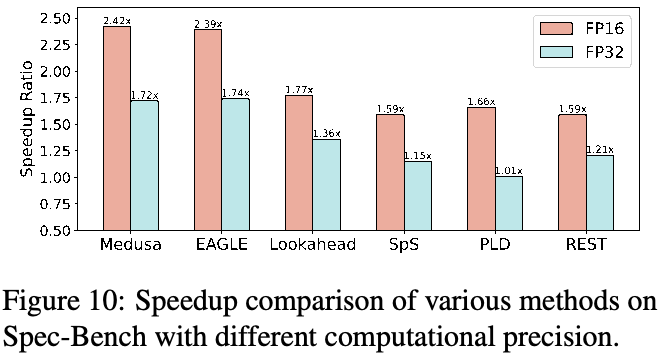
（接上页）由 2.4 倍下降至 2.0 倍。
D.3 计算精度
多数方法主要使用 FP16 评估（Fu et al., 2024; Cai et al., 2024; Li et al., 2024; He et al., 2023）。但必须强调：FP16 下 Speculative Decoding 的输出，未必总与自回归 decoding 相同。偏差源自 FP16 浮点误差累积，尤其对较长序列，可能使两种方法输出不同。在 FP32 下，Speculative Decoding 输出保证与自回归 decoding 完全相同。
图 10 比较 FP16／FP32 的加速性能。所有方法在 FP32 下都明显下降。具体而言，PLD（Saxena, 2023）仅加速 1.01 倍；EAGLE（Li et al., 2024）也从 2.39 倍降至 1.74 倍。为使社区全面理解加速效果，我们倡议未来研究同时报告两种精度的速度指标。